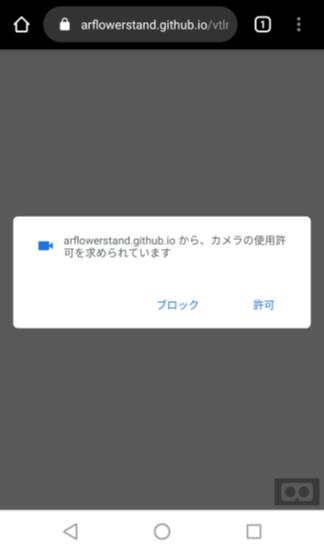
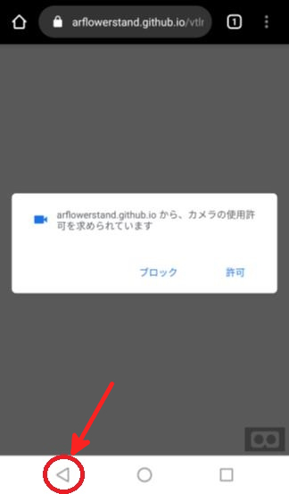
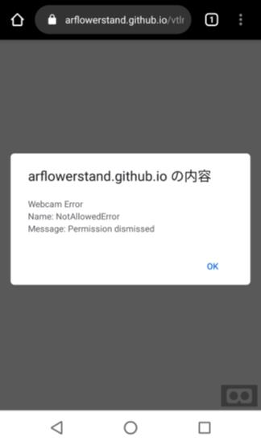
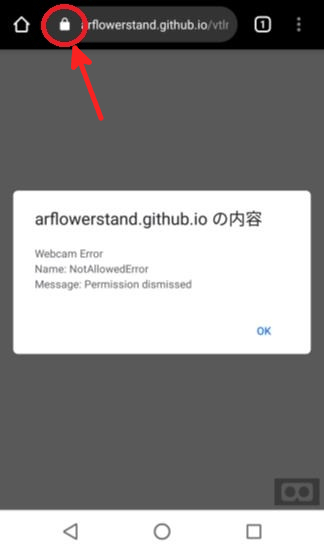
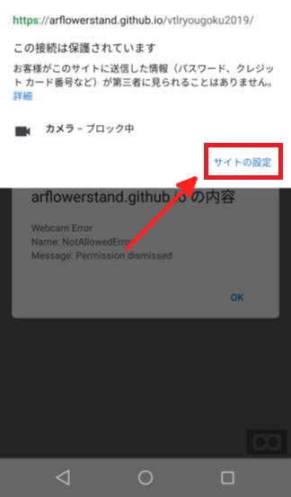
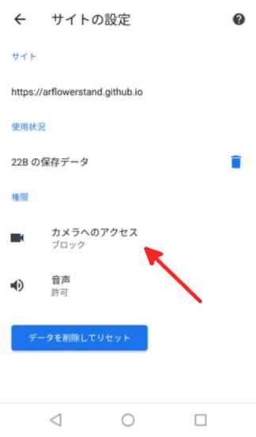
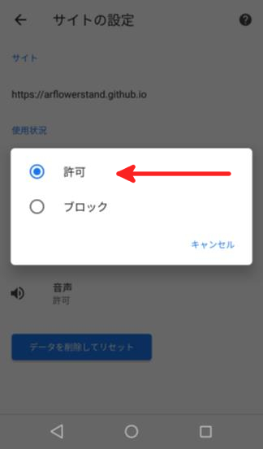
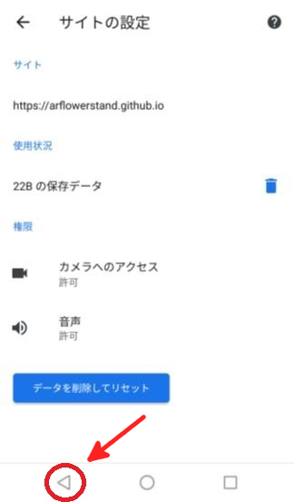
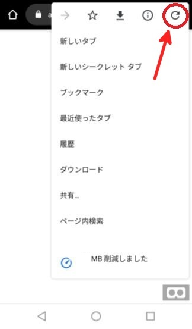

カメラが起動できない場合
- 『AR』ボタンを押してページが切り替わったときにカメラの使用許諾のダイアログ（ポップアップ表示）を確認する

- 『許可』のボタンがを押すことが出来れば問題ありません。
戻る
- 「カメラの使用許諾のダイアログ」表示後、戻るボタン（画面下のAndroidの戻るボタン）を押す

- カメラ起動不可のダイアログを確認する

- ブラウザのURL表示部分の「鍵マーク」を選択する

- 「カメラ - ブロック中」と表示されていることを確認したら、「サイトの設定」ボタンを押す

- 「サイトの設定」画面にて「カメラへのアクセス」を選択し、「許可」を選択する


- 戻るボタン（画面下のAndroidの戻るボタン）を押して、画面に戻る

- 設定ボタン（画面右下の・が3つ縦に並んだボタン）を押して、更新ボタンを押す

- 撮影画面を表示して、フラスタのARコードを映す